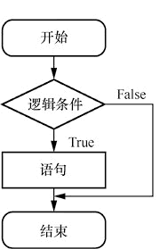
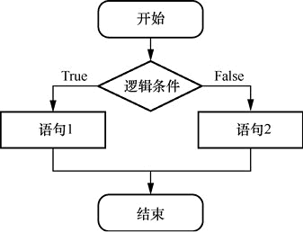

首页 > 编程笔记
Python if语句用法详解
在Python中，if语句主要包括以下4种：
举例：
修改上面的程序：
有一点要特别注意，在上面这个例子中，print("那你很棒") 属于 if 语句，而 print("欢迎来到C语言中文网") 却不属于。
在 Python 中，一般使用“缩进”的方式告诉系统这个代码块属于哪一个 if、else 或 while，这一点跟 C、C++ 等语言使用大括号“{}”的方式不一样。对于缩进，一般是按 4 次空格（Space）键或按一次 Tab 键。当然了，某些编辑器（如 VSCode 等）会自动缩进。
再举个例子：
if else 相对 if 来说仅多了一个选择，当条件表达式返回为 True 时，会执行 if 后面的代码块；当条件表达式返回为 False 时，会执行 else 后面的代码块。
举个简单的例子：
语法：
举个例子：
语法：
之前也说过了，Python 中是用“缩进”的方式来表示某一个代码块属于哪一个 if 或 else 的。此外，我们还要根据缩进来认真判断哪两个 if 和 else 是一对。
举个例子：
实际上，if 语句的嵌套也是很好理解的，就是在 if 或 else 内部再增加一层判断条件。对于 if 语句的嵌套，一层一层从外到内地进行判断就可以了，就像剥洋葱一样，非常简单。
我们再来看一个例子。
- 单向选择：if...；
- 双向选择：if...else；
- 多向选择：if...elif...else；
- if语句的嵌套。
if单向选择
单向选择的流程图如图 1 所示。

图 1 if单向选择
语法：
图 1 if单向选择
if 条件:
...
举例：
score = 100
if score > 60:
print("那你很棒")
print("欢迎来到C语言中文网")
输出结果如下：
那你很棒
欢迎来到C语言中文网
修改上面的程序：
score = 100
if score < 60:
print("那你很棒")
print("欢迎来到C语言中文网")
输出结果如下：
欢迎来到C语言中文网
由于 score<60 返回 False，因此 Python 会跳过冒号下面缩进的代码，然后直接执行最后一个 print()。有一点要特别注意，在上面这个例子中，print("那你很棒") 属于 if 语句，而 print("欢迎来到C语言中文网") 却不属于。
在 Python 中，一般使用“缩进”的方式告诉系统这个代码块属于哪一个 if、else 或 while，这一点跟 C、C++ 等语言使用大括号“{}”的方式不一样。对于缩进，一般是按 4 次空格（Space）键或按一次 Tab 键。当然了，某些编辑器（如 VSCode 等）会自动缩进。
再举个例子：
if True == 1:
print("True等价于1")
if False == 0:
print("False等价于0")
输出结果如下：
True等价于1
False等价于0
if else双向选择
双向选择的流程图如下图所示。

图 2 if else双向选择
语法：
图 2 if else双向选择
if 条件:
...
else:
...
if else 相对 if 来说仅多了一个选择，当条件表达式返回为 True 时，会执行 if 后面的代码块；当条件表达式返回为 False 时，会执行 else 后面的代码块。
举个简单的例子：
score = 100
if score < 60:
print("补考!")
else:
print("通过!")
输出结果如下：
通过!
由于变量 score 的值为 100，而 score<60 返回 False，因此会执行 else 后面的代码块。if elif else多向选择
多向选择就是在双向选择的基础上增加了一个或多个选择分支。语法：
if 条件1:
#当条件 1 为 True 时执行的代码
elif 条件2:
# 当条件 2 为 True 时执行的代码
else:
# 当条件 1 和条件 2 都为 False 时执行的代码
多向选择的语法看似很复杂，其实非常简单，它只是在双向选择的基础上增加了一个或多个选择分支。小伙伴们对比一下两者的语法格式就明白了。elif 指的是“else if”，表示带有条件的 else 子句。
举个例子：
time = 21
if time < 12:
print("早上好！")
elif time >= 12 and time < 18:
print("下午好！")
else:
print("晚上好！")
输出结果如下：
晚上好！
对于多向选择，程序会从第 1 个 if 语句开始判断，如果第 1 个 if 语句的条件不满足，则判断第 2 个 if 语句的条件……直到满足为止。一旦满足，就会退出整个 if 结构。if语句的嵌套
在 Python 中，if 语句是可以嵌套使用的。语法：
if 条件1：
if 条件2:
# 当条件 1 和条件 2 都为 True 时执行的代码
else:
# 当条件 1 为 True、条件 2 为 False 时执行的代码
else:
if 条件2:
# 当条件 1 为 False、条件 2 为 True 时执行的代码
else:
# 当条件 1 和条件 2 都为 False 时执行的代码
之前也说过了，Python 中是用“缩进”的方式来表示某一个代码块属于哪一个 if 或 else 的。此外，我们还要根据缩进来认真判断哪两个 if 和 else 是一对。
举个例子：
gendar = "女"
height = 172
if gender == "男":
if height > 170:
print("高个子男生")
else:
print("矮个子男生")
else:
if height > 170:
print("高个子女生")
else:
print("矮个子女生")
输出结果如下：
高个子女生
在这个例子中，外层 if 语句的判断条件 gender=="男" 返回 False，因此会执行 else 语句。我们可以看到 else 语句内部还有一个 if 语句，这个内层 if 语句的判断条件 height>170 返回的是 True，所以最终输出的内容为“高个子女生”。实际上，if 语句的嵌套也是很好理解的，就是在 if 或 else 内部再增加一层判断条件。对于 if 语句的嵌套，一层一层从外到内地进行判断就可以了，就像剥洋葱一样，非常简单。
我们再来看一个例子。
x = 4 y = 8
if x < 5:
if y < 5:
print("x小于5，y小于5")
else:
print("x小于5，y大于5")
else:
if y < 5:
print("x大于5，y小于5")
else:
print("x大于5，y大于5")
输出结果如下：
x小于5，y大于5
总结
对于 if 语句，还有以下 3 点需要说明。- Python使用的是 elif，而不是 else if。
- Python中 if 的后面不需要加括号。
- Python只有 if 语句，没有 switch 语句，这一点和其他语言不同。
关注公众号「站长严长生」，在手机上阅读所有教程，随时随地都能学习。内含一款搜索神器，免费下载全网书籍和视频。

微信扫码关注公众号